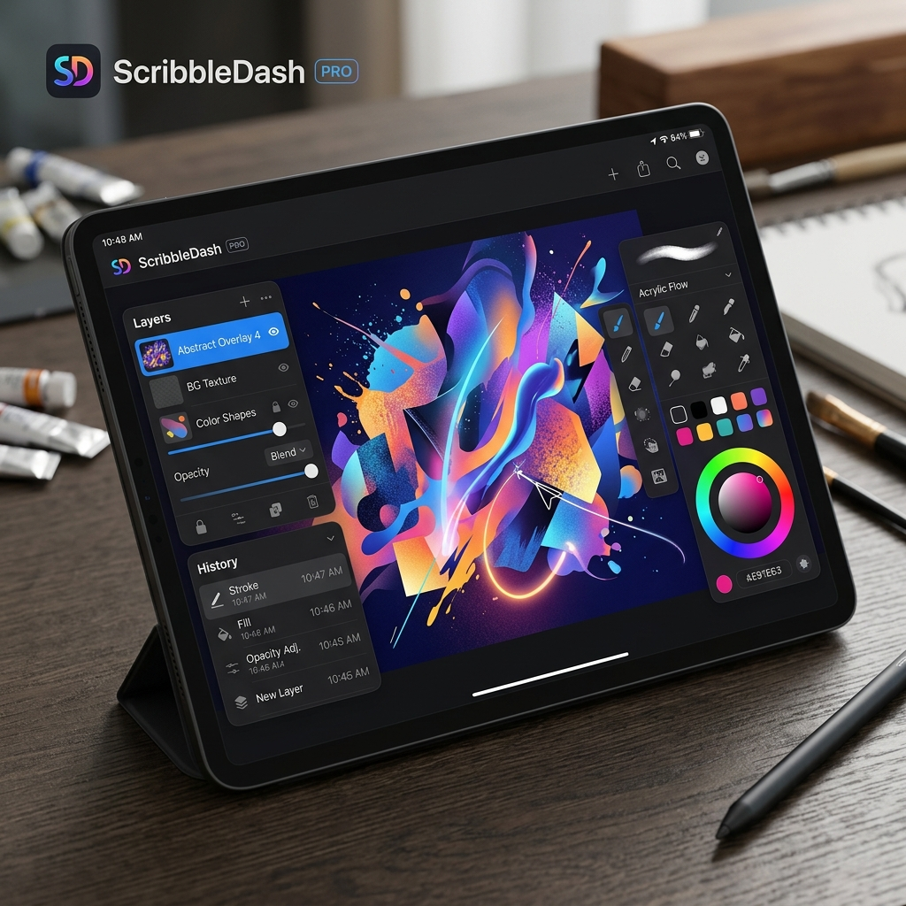

ScribbleDash Drawing Engine
تطبيق تفاعلي لنظام Android يستكشف أداء واجهة Canvas API في Jetpack Compose من خلال بيئة تحدي رسم مرحة.

نظرة عامة
يُظهر ScribbleDash الخبرة في التعامل مع واجهات الرسوم في Android المدمجة أصلاً عبر قيود Compose. من خلال أطوار اللعب، فإنه يتحدى المستخدمين بلوحات رسم متفاوتة الصعوبة، مطبقاً استخراج الإيماءات في الوقت الفعلي ومصفوفات حالة السجل للرسم بسلاسة متناهية.
التحدي
إنشاء تطبيق رسم تفاعلي على Compose يعني إعادة الحساب المستمر لمسارات Bezier عبر أحداث المؤشر المرتفعة التردد. بدون استراتيجيات متقدمة، ستتعثر حلقة الرسم بشكل غير مقبول.
تظهر التعقيدات الإضافية عند الحاجة لتعقب مسارات الرسم في الذاكرة لتطبيق ميزات التراجع والإعادة لضربات الفرشاة دون التسبب باستنفاذ الذاكرة على المدى الطويل، كل ذلك أثناء دمج الهيكل بأكمله بشكل نظيف وفقاً لهيكلية مدفوعة بالمجال (DDD).
الهيكلية المعمارية والقرارات التقنية
لتوفير تنفيذ رسم عالي الدقة، استخدمت تخطيطات Jetpack Compose `Canvas` الأصلية المدمجة بأكملها داخل هيكلية متعددة الحزم محسنة ومقسمة إلى طبقات.
التنفيذ الأمثل للمسارات
- اجتياز المسارات: بدلاً من إعادة بناء كامل اللوحة في كل إطار، يتم تخزين ضربات الفرشاة الفردية كمصفوفات `Path` مؤقتة، مما يمنع إعادة التكوين المعقدة إلا عند الضرورة.
- هيكلة المجلدات الشبيهة بالوحدات: بالرغم من أن التطبيق يعتمد على وحدة واحدة مبدئياً، تم فصل حزم الميزات أفقياً بالكامل للتمكين من إضافة أطوار لعب جديدة بسلاسة.
- تتبع التبعية: يتعامل إطار الـ DI مع حقن حالات أطوار اللعب بأسلوب منفصل تماماً عن تخطيطات الواجهة الأساسية بأداة Compose.
التأثير والنتائج
- تم تحقيق معدل رسم 60 إطاراً في الثانية (60FPS) بسلاسة تحت حلقات الإدخال المكثفة للمؤشر عن طريق الحد من إعادة تكوين الشجرة الواسعة.
- محرك تراجع وإعادة موثوق ومتسق تم الحفاظ عليه دون التسبب بحمل زائد في تخصيصات الذاكرة خلال جلسات اللعب الطويلة.
- ملاحة قابلة للتطوير مدعومة بواسطة Koin لحقن تجارب واجهة المستخدم المستقلة ديناميكياً لكل دليل حزم معزول.